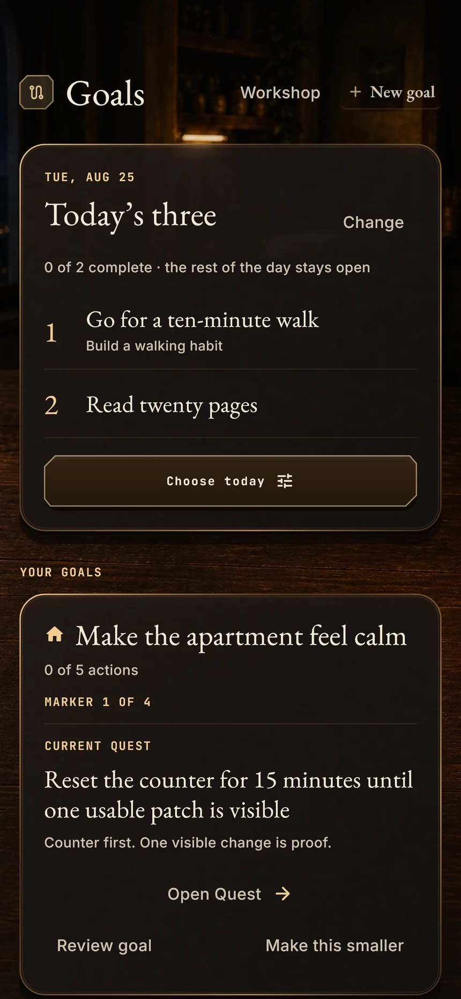
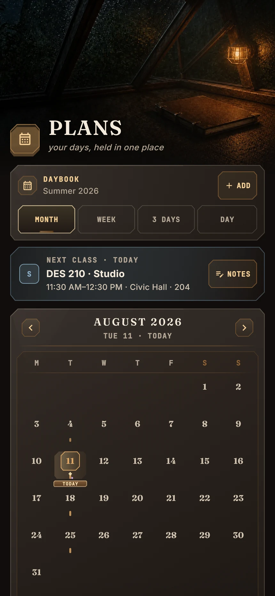
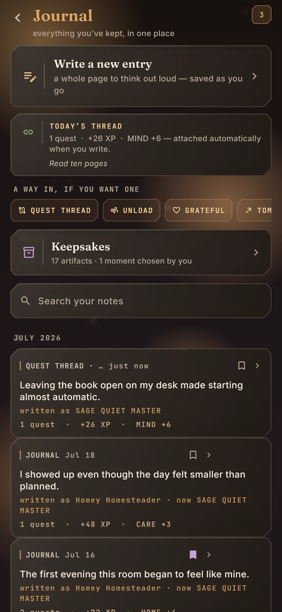
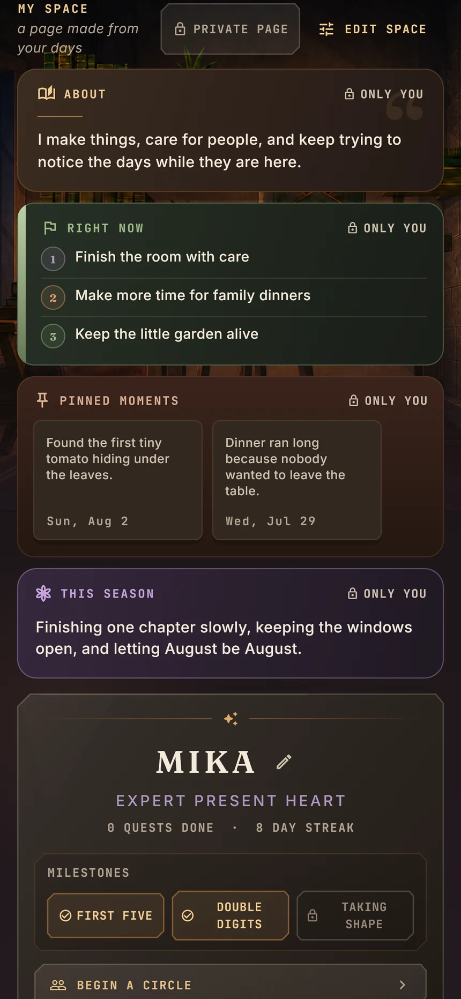

02 / Room of Days · life-RPG habit app
A day worth
coming back to.
A life-RPG habit app I started and built on my own. Chores and habits become Quests that earn XP, grow your stats, and furnish a room of your own. It is on the App Store with 10+ active users.


Actual app renders with sample content · September 2026. Open any capture to explore the details.
Make ordinary effort feel worthwhile.
Room of Days brings the warmth and sense of place I love in games to everyday life. An illustrated room gives the day an identity. A small field of quests makes it approachable. Completing an action has a visible consequence.
The craft runs through the experience: material surfaces, careful typography, responsive controls, sound and haptic feedback, and transitions that connect one moment to the next. The goal is simple: software that feels good to open, use, and return to.
I started Room of Days on my own and build every layer: product direction, interaction design, the Flutter app and its iPhone widget, progression systems, music and sound, and persistence. It has been on the App Store since August 2026, has 10+ active users, and has 1,200+ automated tests behind it. The browser study on this page is illustrative, not the app itself.
Try the moment of completion.
One action changes the Quest and its rewards together. Complete this sample, then undo it to watch every value return.
Room of Days / interactive sample
A Quest,
from start to finish.
Complete the Quest to see what changes.
Read ten pages
A little time with a book you want to finish.
A sample Quest with illustrative rewards. Undo restores every value. Room of Days itself is shown in the app captures.
A complete day, considered.
The app follows a person beyond the moment they check something off. Daily quests connect to longer-term goals, the calendar makes room for actual commitments, and a journal gives completed effort somewhere to live.






Begin with something manageable
Choose up to three quests for today. The rest can remain open without becoming a wall of overdue work.
Make the plan fit the person
The Workshop turns a goal into a reviewed next action. When a day changes, the return flow can make that action smaller, prepare for another attempt, or leave today alone.
Let completion mean something
A completion receipt shows the quest, experience, Glimmers, and progress it earned. Reflection can carry the completed action into the journal, keeping the result connected to what actually happened.
Reliable beneath the atmosphere.
A reward system is only satisfying if it is consistent. A journal is only useful if the entry is there tomorrow. I treat those behaviors as part of the product design. Sound is routed by interaction and material; haptics follow meaningful events, and motion respects the device’s accessibility settings.
The core day works offline.
Quests, progress, and reflection are grounded in local state. Cloud and social features sit around the everyday loop.
Actions have explicit consequences.
Choosing work, accepting a plan, completing a quest, and undoing it are distinct transitions. Rewards and progress follow the action that earned them.
Recovery is part of the journey.
Completion, exactly-once rewards, undo, and lifecycle saves have explicit checks. Undo also preserves journal writing added afterward. Interface reviews follow the connected journey, including changed plans and return visits.
A little room of your own.


Alongside the practical day is a more personal layer: moments, intentions, keepsakes, and reflection. It gives progress a history and the app a sense of belonging.
Privacy is visible in the experience. A personal page starts private, with deliberate audience controls when someone chooses to share.
That is the standard I keep returning to across Room of Days: thoughtful software whose personality and engineering support the same person.